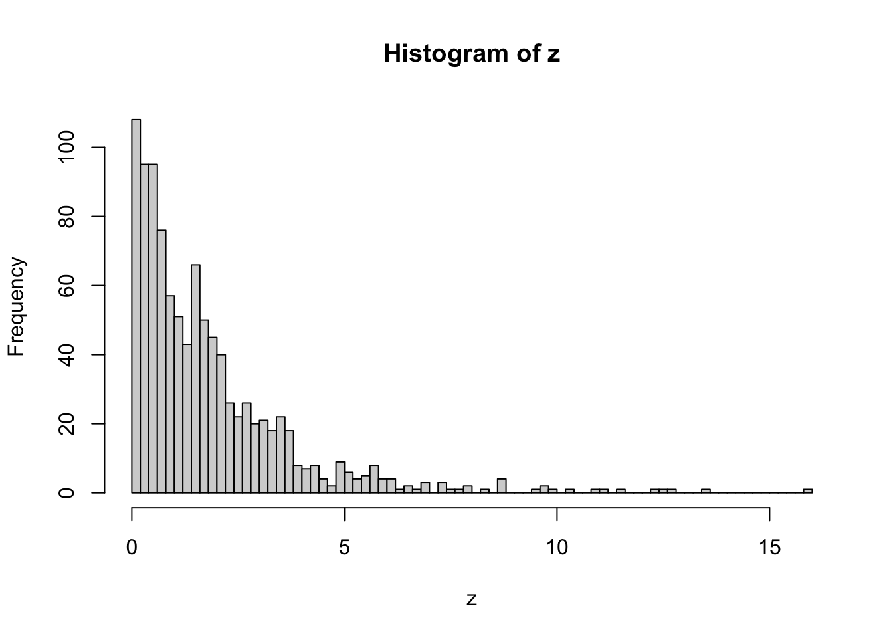
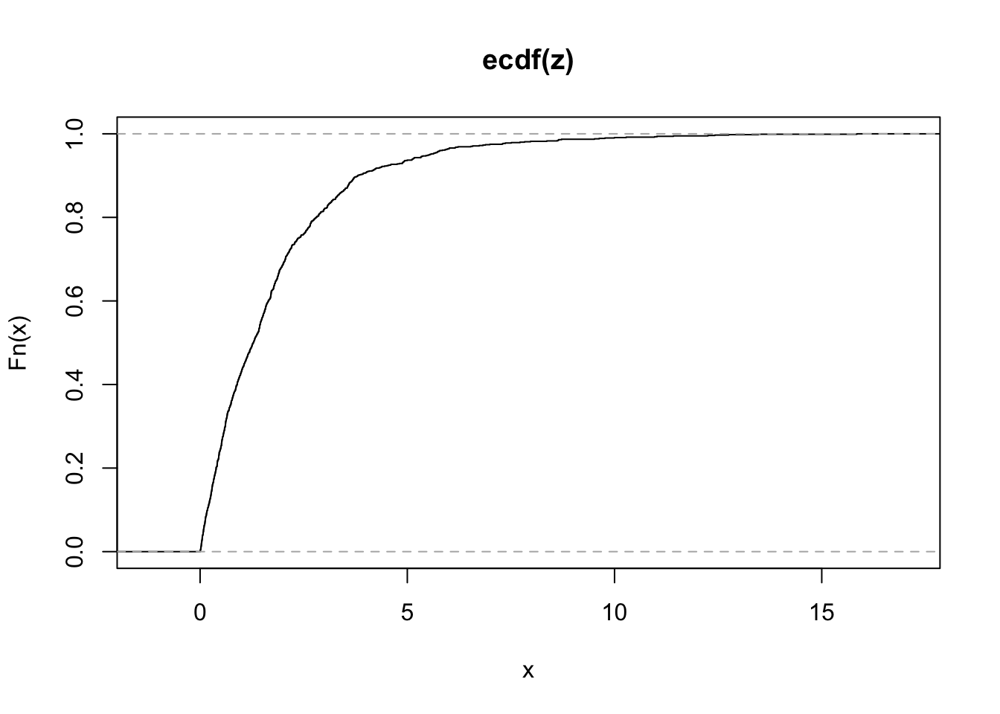
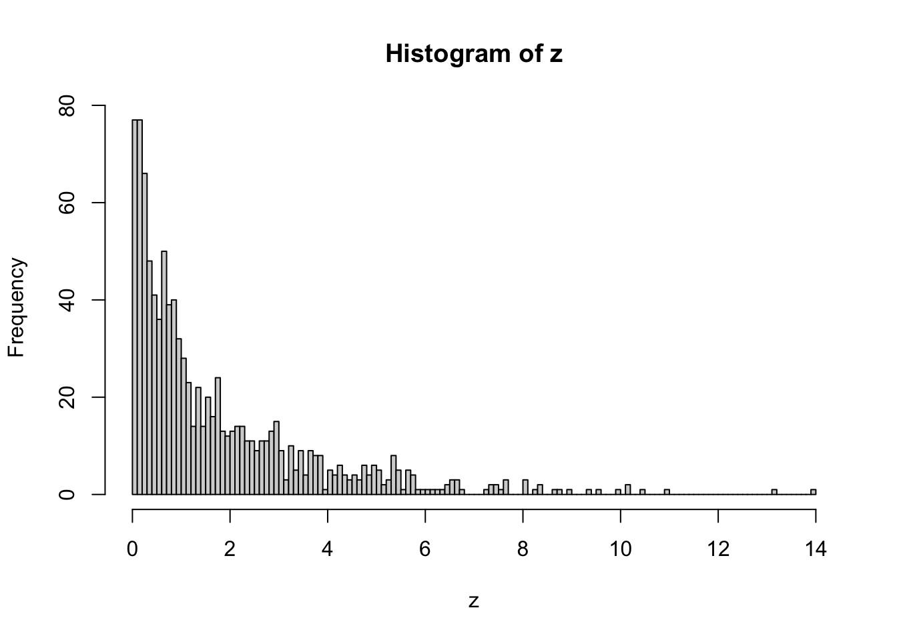
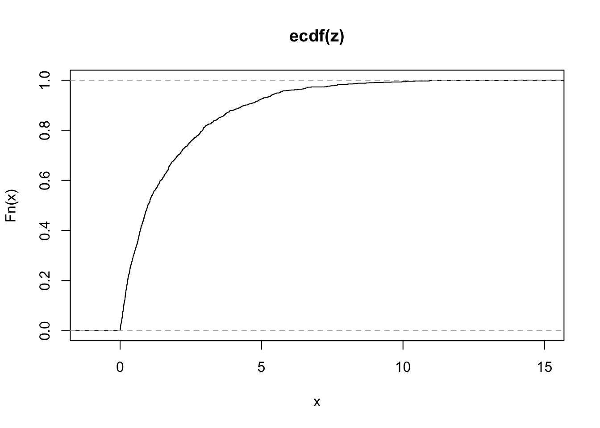
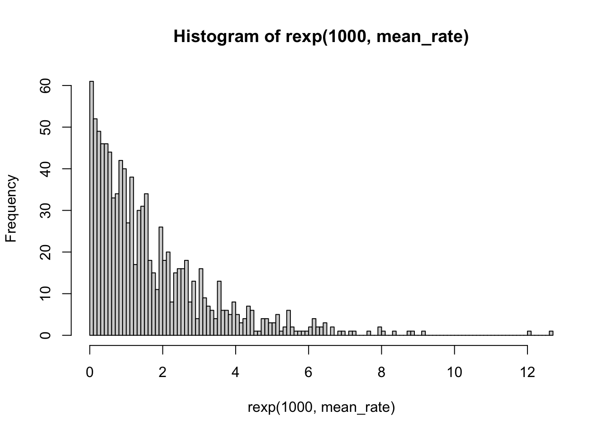

## High-ses group innovation access times
accessTimes <- function(pHigh, popSize, tau, zeta) {
nH <- floor(pHigh*popSize)
nL <- popSize-nH
x1 <- rexp(nH, tau*zeta)
x2 <- rexp(nL, zeta)
z <- c(x1,x2)
return(z)
}Parallel diffusion of innovation and infection
Introduction
The big idea here is to incorporate the ’innovation diffusion‘ process that shapes the differential susceptibility predicted by fundamental cause theory (FCT) (Link and Phelan 1995) into a model that also allows clustering of contact along a similar dimension, such as socioeconomic status.
Diffusion of Innovations
In an earlier paper, Clouston et al. (Clouston et al. 2016) described the life-cycle of a fundamental cause, where they detailed the rise and fall of inequity in access to a given health innovation (See Figure 1). Much like the segregation and transmission model put together by Acevedo-Garcia (Acevedo-Garcia 2000), this has never really been subject to simulation, particularly in the realm of infectious disease epidemiology.

Capturing innovation ‘diffusion’ by SES
How can we capture the heterogeneous distribution of innovation access times pictured in Figure 1? Lets start with a simple example, in which there are two groups representing high and low SES individuals. Some proportion \(\eta\) of individuals in the population belong to the high-SES group, with the remaining \(1-\eta\) individuals in the lower-SES group.
We can denote \(\zeta_L\) as the rate of access for the lower-SES population, and \(\tau \ge 1\) as a parameter scaling the rate of access for the high-SES group. We can then express the overall access rate as \(\zeta = \eta \tau \zeta_L + (1-\eta) \zeta_L\)
In this example, the top 20% of the population gets access twice as fast as the lower 80%:
z <- accessTimes(0.2, 1000, 2, 0.5)
hist(z, breaks=100)
plot(ecdf(z))
In this one, the rate is much higher at 5 times faster
z <- accessTimes(0.2, 1000, 5, 0.5)
hist(z, breaks=100)
plot(ecdf(z))
We can compare these visually to the equal-access (or equal rate of access) version as follows:
mean_rate <- 1/mean(z)
print(mean_rate)[1] 0.5767596hist(rexp(1000, mean_rate), breaks = 100)
In the heterogeneous rate version, more people have very early access times, with more people with higher-than-average wait times in the right tail of the distribution.
ODE Model
We can represent this intuition by including separate SES classes in an ODE-based transmission model.
To do this, we can have multiple susceptible states, including a protected state that individuals enter when they get access to the innovation.
In a simple, mass-action version of this model, we have plain-old susceptibility, a protected state that individuals flow into at a constant rate, and infectious and susceptible individuals in all groups mix evenly.
flowchart LR
S1[S1:High SES] --> |τη| B[Protected]
S2[S2: Low SES] --> |η| B[Protected]
B --> |ρβI| I
S1 --> |βI| I[Infected]
S2 --> |βI| I[Infected]
I --> |ᵞ| R[Recovered]
Where:
\(\beta\) is the rate of transmission
\(\rho\) is the reduction in infection risk associated with protection
\(\tau\) is the rate at which lower-SES individuals get access
\(\tau \eta\) is the rate at which individuals in the high-SES group get access to the innovation, where \(\tau \ge 1\).
References
Acevedo-Garcia, Dolores. 2000. “Residential Segregation and the Epidemiology of Infectious Diseases.” Social Science & Medicine 51 (8): 1143–61. https://doi.org/10.1016/S0277-9536(00)00016-2.
Clouston, Sean A. P., Marcie S. Rubin, Jo C. Phelan, and Bruce G. Link. 2016. “A Social History of Disease: Contextualizing the Rise and Fall of Social Inequalities in Cause-Specific Mortality.” Demography 53 (5): 1631–56. https://doi.org/10.1007/s13524-016-0495-5.
Link, Bruce G., and Jo Phelan. 1995. “Social Conditions As Fundamental Causes of Disease.” Journal of Health and Social Behavior 35: 80. https://doi.org/10.2307/2626958.